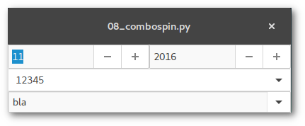

Qual der Wahl
Spinbutton und Combobox
Die Widgets erleichtern die Eingabe bestimmer Werte, indem eine Listenauswahl oder ein Wertebereich und ggf. Standardwerte dazu vorgegeben werden. Die Eingabe ist normalerweise rein intuitiv über Mausklicks machbar, Tastatureingaben sind optional.
Glade
{kind=link}
Spinbutton
Spinbuttons verfügen über zahlreiche, per Glade festlegbare Eigenschaften wie Mindest-/Höchst-/Standardwert. Zum Spinbutton gehört zwingend das Widget adjustment, das unter "Allgemein > Attribute des Einstellknopfs > Stellgröße" ausgewählt oder angelegt werden kann.
Im Beispiel repräsentieren die beiden Spinbuttons Monat und Jahr, wobei der Spinbutton für den Monat zyklisch angelegt wird, das heißt, nach dem Erreichen des Maximalwertes springt er auf den Mindestwert um. Dieses Verhalten löst das Signal wrapped aus und wird angelegt, um die Jahreszahl im zweiten Spinbutton passend umzuschalten.
Combobox
Es gibt in GTK+ zwei verschiedene Combobox-Widgets:
- GtkComboboxText
- Die Auswahlliste des Dropdown-Menüs sind Strings und werden direkt im Widget erstellt.
- GtkCombobox
- Die Daten für die Auswahlliste stammen aus einem Listen- oder Baumspeicher (ListStore oder TreeStore). In diesen können Datensätze mit verschiedenen Informationen gespeichert werden (siehe auch Artikel "Überlistet").
Beide Widgets können zusätzlich ein optionales Eingabefeld besitzen. In diesem Fall muss "Allgemein > Hat Eintrag" aktiviert sein. Dies legt das interne Widget GtkEntry an. Wichtig ist, dass dieses unter "Gemeinsam > Widget Flags" fokussierbar gemacht wird.
Im Beispiel gibt es zwei ComboboxText-Widgets. Das erste besitzt kein Eingabefeld, es ist also ausschließlich eine Auswahl unter den gegebenen Listenpunkten möglich, die Auswahlliste ist direkt in Glade eingegeben. Die zweite Combobox hat ein Eingabefeld, zu demonstrativen Zwecken werden die Listenpunkte direkt im Programm erstellt. Bei beiden wird das Signal changed abgefangen.
Python
Spinbutton
Der Wert eines Spinbutton lässt sich einfach per get_value bzw. set_value ermitteln bzw. festlegen. So werden im Beispiel zu Beginn die aktuellen Monats- und Jahreszahlen eingetragen und in der Funktion on_spin_m_wrapped beim Umschalten von 12 auf 1 die Jahreszahl um 1 erhöht und umgekehrt.
Combobox
Listeneinträge einer Combobox können einfach mit der Funktion append angefügt werden, wie in diesem Beispiel etwa
[self.builder.get_object("comboboxtext2").append(None,entry) for entry in ("bla","blubb","ja","nein")]
Der aktuell angewählte Eintrag wird mit der Funktion widget.set_active_text() ermittelt, diese gibt auch den Text des optionalen Texteintragfeldes aus.
Alles so schön bunt hier
Schöner klicken mit Cascading Style Sheets
CSS
GTK+-Objekte lassen sich mit Hilfe von CSS im Layout verändern. Meiner unmaßgeblichen Ansicht nach sollte man es damit allerdings nicht übertreiben und das grundlegende Erscheinungsbild dem eingestellten Theme überlassen. Links:
- GTK, Python and CSS are an awesome combo - Grundlagen mit Beispiel
- Overview of CSS in GTK+ - ausführliche Übersicht mit vielen Beispielen
- A GTK+ update - Neuerungen seit GTK+ 3.20
Glade

Mit Glade werden nur die Fenster/Widgets angelegt, in diesem Beispiel vier Levelbars mit Werten, die CSS-Layout-Anweisungen erfolgen dann im Code.
Python
CSS
Layout-Anweisungen erfolgen nach dem Muster
widget [element] { font... color... background... ... }
innerhalb einer String-Variblen, die von der Klasse Gtk.CssProvider() geladen werden.
Levelbar
Levelbars können, wie bereits im Artikel "Bars" angedeutet, in definierten Wertebereichen unterschiedliche Farben annehmen (um zum Beispiel einen kritischen Ladezustand zu visualisieren). Die vordefinierten Offset-Marker dafür sind:
- low (<=.25)
- high (<=.75)
- full (bis 1)
Die Werte können mit den Funktionen get_offset_value abgefragt bzw. mit add_offset_value angelegt oder verändert werden.
Im Beispiel wird der unteren Levelbar ein zusätzlicher Offsetmarker zwischen high und full angelegt, deshalb wird beim Wert von 0.8 dort im Gegensatz zur dritten Levelbar nicht der Marker für full ereicht.
self.bar.add_offset_value("alert",.9)
Bars
Progressbars und Levelbars
Glade

Progressbar
Fortschrittsbalken zeigen für gewöhnlich den Status eines länger dauernden Prozesses an. Es gibt dabei zwei Modi:
- verhältnismäßige Anzeige, der Fortschritt wird mit einem Wert zwischen 0 und 1 ausgedrückt
- Aktivitätsmodus, ein beweglicher Block läuft nach zugewiesener Schrittweite hin und her
Zusätzlich hat das Widget eine optionale Textanzeige. Wird der Inhalt nicht spezifiziert, wird der Fortschritt in Prozent angezeigt.
Levelbar
Levelbars werden normalerweise als Füllstandsanzeiger genutzt. Der Füllstand wird dabei wie beim Fortschrittsbalken angezeigt, weitere Widget-Eigenschaften sind:
-
Zwei Anzeigenmodi:
- continuous: ein einzelner Block repräsentiert den gegebenen Wert
- discrete: Levelbar wird in eine festgelegte Anzahl von Blöcken geteilt, ein Block steht für einen Wertebereich
-
Festlegen von Minimal-/Maximalwert möglich, Standardwert ist 0 bzw. 1; beim Anzeigenmodus discrete entspricht der Maximalwert der Anzahl der Blöcke
-
Farbliche Änderungen des Balkens bei Überschreiten bestimmter Werte (siehe CSS-Artikel)
Python
Progressbar
Im Beispiel repräsentiert der erste Balken den Wert, der zweite befindet sich im Aktivitätsmodus. Möchte man bei letzterem trotzdem eine Prozentangabe im Textfeld darstellen, muss man diesen manuell einsetzen:
widget.pulse() widget.set_text("%d %%" % perc_value)
Levelbar
Was set_fraction für Progressbar, ist set_value für Levelbar. Im continuous-Modus ist dies selbsterklärend, im discrete-Modus muss man bedenken, wie viele Blöcke definiert wurden:
widget.set_value(fraction*blocks)
Auf die Funktion add_offset_value und Farbänderung des Balkens beim Überschreiten definierter Werte wird im CSS-Artikel eingegangen.
Drei-Gänge-Menü
Menüs, Toolbars und Statusbars
Glade

Toolbar
Toolbars können verschiedene Widgets wie Buttons, Togglebuttons, Radiobuttons oder (Unter-)Menüs enthalten. Die Erstellung und Bearbeitung erfolgt analog zum Menü über "Edit...".
Statusbar
In der Statusbar können kurze Meldungen/Nachrichten eingeblendet werden. Die Meldungen werden analog zu einer Liste behandelt, das Widget bietet die Funktionen push und pop.
Python
Um Nachrichten an die Statusbar zu senden, bedient man sich einfach der Funktion
widget.push(content_id,message)
Wenn man Meldungen ausschließlich "obendrauf" einblendet, kann man als content_id eine beliebige Zahl angeben, zum Beispiel 0.
Clickbaiting
Switch, Checkbox, Radiobutton - mehr Elemente zum Anklicken
In diesem Artikel wird exemplarisch die Verwendung von Switches, Checkboxen und Radiobuttons vorgestellt. Folgend werden weitere Steuerungs- und Anzeigenelemente verwendet, es wird aber kein Anspruch auf Vollständigkeit erhoben, da die Verwendungsprozedur praktisch nach folgendem Schema funktioniert:
- Container (Box, Leiste etc.) für Element anlegen
- Element hinzufügen
- Element mit einer Bezeichnung versehen (bei Elementen ohne Interaktion wie Boxen oder Trennlinien kann darauf verzichtet werden)
- gewünschtem Signal eine Funktion zuweisen
- (optional) Signal-/Funktionsaufruf in der Vorschaufunktion testen
- Funktion im Programmcode schreiben
Alle verfügbaren GTK+-Klassen und ihre Funktionen findet man unter Python GI API Reference >> Gtk 3.0 >> Classes.

Glade
Switch oder Schalter
Ein Switch ist ein einfacher Ein-/Aus-Schalter mit, Überraschung!, zwei Zuständen. Der Zustand lässt sich über das Signal state_set abrufen.
Checkbox
Checkboxen sind Togglebuttons in anderem Outfit, hier wird demnach das Signal toggled belegt.
Radiobutton
Radiobuttons dienen der Auswahl _eines_ Listenpunktes aus einer gegebenen Liste. Das Element selbst funktioniert ebenfalls wie ein Togglebutton (das Signal toggled zuweisen).
Zusätzlich werden die zusammengehörigen Listenpunkte zu einer Gruppe zugeordet. Dies bewerkstelligt man einfach, indem man alle Radiobuttons unter "Allgemein > Knopfattribute > Gruppe" an einem "führenden Radiobutton" ausrichtet.
Python
Da Checkbox und Radiobutton Togglebuttons sind, wird hier der Status über die Funktion widget.get_active() abgerufen.
Beim Switch wird dem Signal state_set ein Parameter übergeben, der True/False ausgibt:
def on_switch_state_set(self,widget,state): if state is True: print("switch is on") else: print("switch is off")